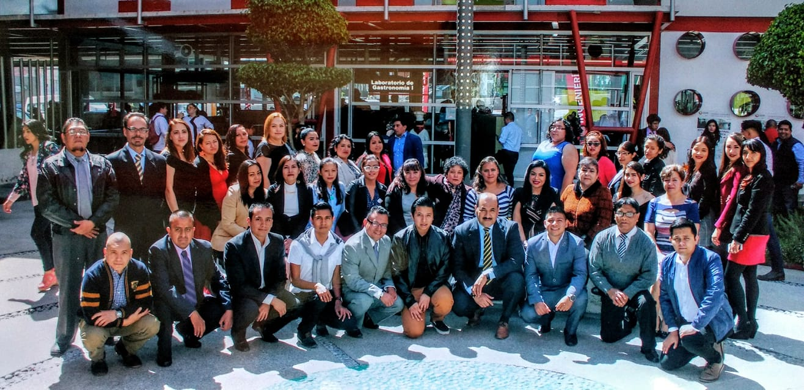

Como docente
Otra de las cosas que me gustan es transmitir lo mejor posible mis conocimientos. La mayor parte de mi vida laboral he sido docente. También es una bonita sensación el hecho de ayudar a los alumnos con problemas tanto de la escuela como personales. Mis alumnos me tienen mucha confianza y se acercan a pedirme consejos y los ayudo en lo más que puedo. Lo mismo sucede con los padres de familia que he tratado, me tienen mucha confianza. Como en todo hay momentos buenos y malos, pero afortunadamente han sido más buenos que malos.
